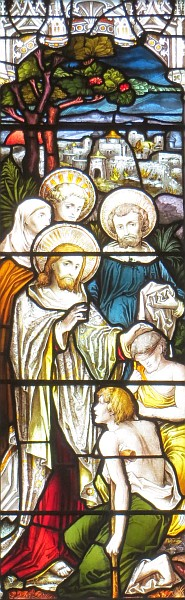

Jésû rembèrtchit dans un baté et r'crouaîsit la mathe et r'vînt dans sa ville. Et v'là qu'nou li'apportit, couochi sus un liet, un houmme sus l'cârré. Quand Jésû vit lus fouai, i' dit à ch't houmme-là sus l'cârré, "Cache, man fis! Tes péchés sont pardonnés!"
Et dêliêment tchiqu's'un d's êcrivains lus êcantîdrent à lus entré-dithe, "Ch'tî-chîn est à êcliandrer."
Quand Jésû apprînr chein qu'i' pensaient, i' lus dit tout coumme, "Pouortchi qu'ous avez des mauvaises pensées dans vos tchoeurs? Ch'est en tchi létché des deux est pus aîsi: dé dithe 'Tes péchés sont pardonnés!' ou d'dithe 'Lève-té et marche!'? Mais à seule fîn qu'ou sachiz qu l'Fis d'l'Houmme a sus la tèrre l'pouvé d'pardonner les péchés: Lève-té!" qu'i' s'fit d'siette à l'houmme sus l'cârré. "Emporte tan liet et r'va-t-en siez té!"
Et dêliêment l'houmme sus l'cârré sé l'vit et s'en r'fut siez li. Et l'monde quand i' vîdrent chu mithacl'ye-là en fûdrent êbézouis et louangîdrent lé Bouôn Dgieu pouor aver bailli un té pouvé ès hoummes.
Mais Jésû ouït chein qu'i' dîthaient et lus dit, "Ch'n'est pon les cheins tchi sont dispos mais ch'est l's însdispos tch'ont bésouain d'un docteu. V'là pouortchi, allez et apprannez chein qu'chu diton-chîn veurt dithe: J'aime mus la mînséthicorde qué l'sacrifice. Ch'est en tchi jé n'sis pon v'nu app'ler les justes mais les pécheurs."
Là-d'ssus les discipl'yes dé Jean vîndrent lé trouver et lî dîdrent, "Pouortchi qu'les Pharisiens et nous, j'jeûnons souvent et qu'vos discipl'yes né jeûnent pon?"
Jésû lus rêponnit, "L's anmîns du brûman peuvent-i' êt' dans la tristesse et en deu quandi qu'lé brûman est acanté ieux? Mais l'temps veindra qu'lé brûman s'sa halé, épis i' jeûn'nont. Pèrsonne né met un neu cliu à un vièr manté; autrément l'neu hal'lait un but du vièr drap et l'êtril'lait acouo pus. Et nou n'met pon nitout d'nouvieau vîn dans d'vièrs vaîssieaux, ch'est en tchi s'nou fait d'ité les vaîssieaux lus bûchent, lé vîn dêgôle et les vaîssieaux sont passecrits. Nan, nou met l'nouvieau vîn dans d'neus vaîssieaux et d'même lé vîn et les vaîssieaux lus prêsèrvent."
Coumme i' lus dîthait chennechîn, un vyi d'la synnagogue s'appréchit d'li et l'adouothit et lî dit, "Ma fil'ye a justément mouothi, mais vé-t-en mett' tes mains sus lyi et ou r'vivtha."
Jésû sé l'vit maîsouain et l'siévit acanté ses discipl'yes.

Êv'chîn eune femme tchi d'pis douze ans 'tait afflyigie d'eune sangn'nie s'appréchit d'li par driéthe et touchit l'bord dé s'n habit.
Ch'est en tchi ou s'dîthait, "Si j'peux raîque touchi s'n habit, jé s'sai r'dgéthie."
Là-d'ssus Jésû, quand i' s'fut r'touônné, l'êpyit et lî dit, "Ma fil'ye, sai tchoeuthue! Ta fouai t'as sauvé." Et chutte femme-là fut r'dgéthie dans l'même moment.
Quand Jésû arrivit siez l'chef d'la sŷnnagogue et coumme il y vit les sounneurs d'fliûte et un fliotchet d'monde tchi 'taient à faithe du tinné, i' lus dit, "All'-ouos-en! Ch'est en tchi chutte fil'ye-là n'est pon morte, oulle est raîque endormie." Et il' en fîdrent fouah d'li. Un co don qu'nou-'avait cârré tout chu monde-là, il entrit et lî prînt la main, et chutte pétite fil'ye-là sé l'vit, et l'brit en couothit dans toute la contrée.
Coumme Jésû s'dêhalait dé ch't endrait-là, deux aveugl'yes lé siûdrent, et i' briyaient et dîthaient, "Fis d'Dâvi, ai pitchi d'nous!"
Et quand i' vînt dans la maîson, ches aveugl'yes-là lus appréchîdrent dé li. Et Jésû lus dit, "Criy'-ous qué j'piêsse faithe chein qu'ou d'mandez?"
I' lî rêponnîdrent, "Oui, Seigneu."
Là-d'ssus i' touchit lus ièrs en dîthant, "Qu'i' vos sait fait siévant vot' fouai."

Maîsouain lus ièrs fûdrent êcalés, et Jésû lus d'fendit fortément d'en pâler, et lus dit, "Souongniz qu'fis d'âme né l'sache!" Mais ieux, quand i' lus en fûdrent, i' publyîdrent san r'nom par toute chutte contrée-là.
Quand i' lus en fûdrent, nou li'am'nit un houmme muet endêmonné. Quand l'dêmon fut env'yé hors, l'muet pâlit et l'peupl'ye en fut ravi et i' dîthaient, "Nou n'a janmais veu rein d'ité en Israël!" Mais les Pharisiens contrathiaient, "Ch'est par l'prînce des dêmons qu'il envyie hors les dêmons."
Assa Jésû, coumme il allait par vaies et par camps dans les villes et les villages, ensîngnait dans lus sŷnnagogues et prêchait la bouonne nouvelle du rouoyaume, en dgéthissant toutes sortes dé maux et d'maladies parmi l'peupl'ye. Et quand i' vit tout chu peupl'ye-là, il en eut pitchi viyant qu'i' 'taient accabâssés d'maux, et couochis sus la tèrre dé taque en taque coumme des brébis tchi n'ont pon d'gardeux. Là-d'ssus i' dit à ses discipl'yes, "L'avoût est bé, mais l's ouvrièrs sont êcars; priyiz don l'maît' d'l'avoût qu'il envyie d's ouvrièrs dans s'n avoût."
Viyiz étout: